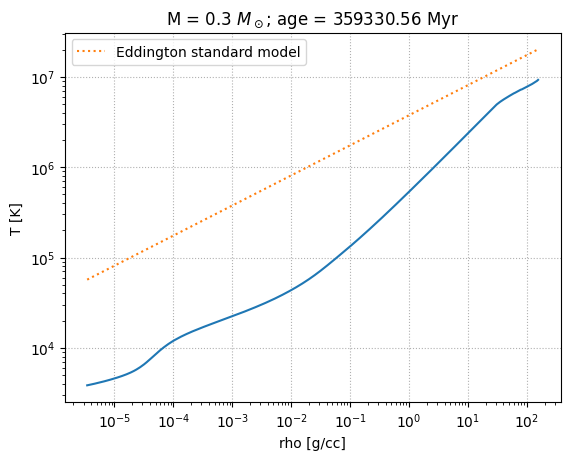
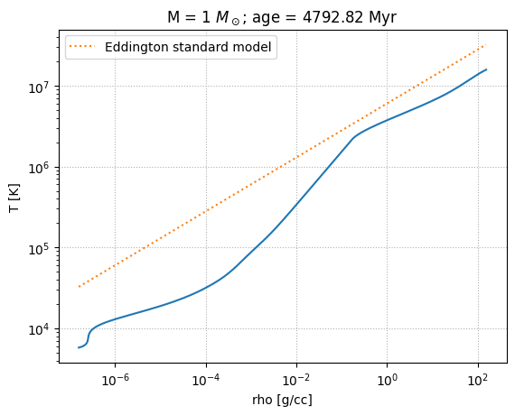
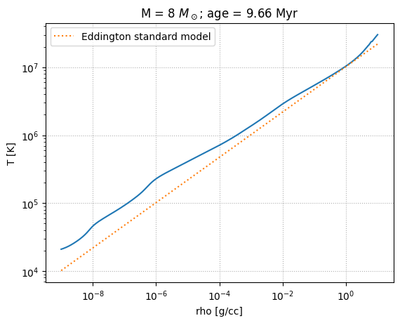
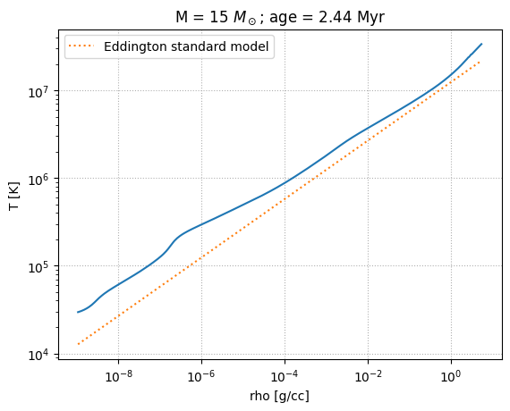

Eddington Standard Model#
Let’s look at the output from the MESA stellar evolution code for 4 different mass progenitors: 0.3, 1, 8, and 15 \(M_\odot\) and see how well the Eddington standard model does in comparison.
Tip
These models were all created using MESA Web a web-based interface to MESA for quick calculations.
To read in these files, we use py_mesa_reader
Tip
py_mesa_reader is available on PyPI, so it can be installed using pip as:
pip install mesa_reader
Loading the data#
import numpy as np
import matplotlib.pyplot as plt
import mesa_reader as mr
MESA provides 2 types of output: profiles and a history. The profiles represent a snapshot of the start at one instance of time and give the stellar data as a function of radius or enclosed mass. The history provides some global quantities as a function of time throughout the entire evolution of the star. We’ll use both.
The model files are:
\(0.3 M_\odot\):
\(1 M_\odot\):
\(8 M_\odot\):
\(15 M_\odot\):
To make the management easier, we’ll create a container for each model that holds the history and profiles, processed by py_mesa_reader
class Model:
def __init__(self, mass, profiles=None, history=None):
self.mass = mass
if history:
self.history = mr.MesaData(history)
self.profiles = []
if profiles:
for p in profiles:
self.profiles.append(mr.MesaData(p))
Now read in all the data. For all but the lowest mass we have 2 profiles and 1 history. The profiles were picked to roughly correspond to the midpoint of core H burning and core He burning.
models = []
models.append(Model(0.3, profiles=["M0.3_default_profile8.data"],
history="M0.3_default_trimmed_history.data"))
models.append(Model(1, profiles=["M1_default_profile8.data",
"M1_default_profile218.data"],
history="M1_default_trimmed_history.data"))
models.append(Model(8, profiles=["M8_basic_co_profile8.data",
"M8_basic_co_profile39.data"],
history="M8_basic_co_trimmed_history.data"))
models.append(Model(15, profiles=["M15_aprox21_profile8.data",
"M15_aprox21_profile19.data"],
history="M15_aprox21_trimmed_history.data"))
Creating Eddington profile#
The Eddington standard model works for a fully radiative star with a constant composition.
In class, we found that the temperature and density in the Eddington standard model were related by
We will assume that \(\mu\) is constant and take \(\mu\) and \(\beta\) from the center of the star.
# CGS constants
k_B = 1.38e-16
m_u = 1.66e-24
m_e = 9.11e-28
c = 3.e10
h = 6.63e-27
a = 5.67e-15
def get_beta(profile):
"""compute the raito of gas to total pressure"""
P_g = profile.Rho[0] * k_B * profile.T[0] / (profile.mu[0] * m_u)
beta = P_g / profile.pressure[0]
return beta
def eddington_T(rho, beta, mu, M):
return 4.62e6 * beta * mu * M**(2./3.) * rho**(1./3.)
Here’s our plotting function. We will plot the data from the MESA model and the line corresponding to the Eddington standard model.
def make_plot(profile, beta, M):
fig, ax = plt.subplots()
ax.loglog(profile.Rho, profile.T)
ax.loglog(profile.Rho, eddington_T(profile.Rho, beta, profile.mu[0], M),
ls=":", label="Eddington standard model")
ax.legend()
ax.set_xlabel("rho [g/cc]")
ax.set_ylabel("T [K]")
ax.set_title(rf"M = {M} $M_\odot$; age = {profile.star_age/1.e6:.2f} Myr")
ax.grid(ls=":")
for star in models:
M = star.mass
p = star.profiles[0]
beta = get_beta(p)
fig = make_plot(p, beta, M)




We see that the high mass stars fit the Eddington profile well.